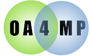
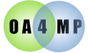

Welcome to OA4MP server! OA4MP stands for Open Authorization for Many People, and allows open authorization with multiple identities. The server allows for authorization and issues tokens, (hence some call it an issuer). There is also an OA4MP client. Current release is 6.0.
This is available as an installer. Download server-installer.jar from the website. This will download and install a full distribution for the version you want. A full set of help is built in to the installer and if you issue
java -jar server-installer.jar
(so no arguments) it will print out a general help page with instructions. Generally you want to set an environment variable, OA4MP_SERVER and install to that. If you are installing the OA4MP client as well, these should go into different directories. The suggested directory for the server is /opt/oa4mp_server. This jar will install the CLI, download the current war and so forth. It will also create a barebones configuration for you server, in $OA4MP_SERVER/etc. After the installation has finished, follow the instructions. You should set up any databases (see comments in the configuration file and below for databases). A good post install test is to see if the CLI comes up:
my-pc:$OA4MP_SERVER/bin/cli
.g8""8q. db `7MMM. ,MMF'`7MM"""Mq.
.dP' `YM. ;MM: MMMb dPMM MM `MM.
dM' `MM ,V^MM. ,AM M YM ,M MM MM ,M9
MM MM ,M `MM AVMM M Mb M' MM MMmmdM9
MM. ,MP AbmmmqMA ,W' MM M YM.P' MM MM
`Mb. ,dP'A' VML ,W' MM M `YM' MM MM
`"bmmd"'.AMA. .AMMA.AmmmmmMMmm .JML. `' .JMML..JMML.
MM
MM
*************************************************************
* OA4MP CLI (Command Line Interpreter) *
* Version 6.0 *
* By Jeff Gaynor NCSA *
* type 'help' for a list of commands *
* 'exit', 'quit' or '/q' to end this session. *
*************************************************************
oa4mp>
You may now profitably read how to configure the deployment, and deploy it to Tomcat. The basic configuration for the CLI as delivered should work for the server, although there are many ways to extend and configure OA4MP, so read the comments in the configuration file (has suggestions based on your installation choices) and the documentation.
If you need to deploy this to Apache, one possible way is to use the venerable Proxy AJP connector, proxy_ajp.conf file (which, e.g., lives under /etc/httpd/conf.d in most unix distributions):
ProxyPass /oauth/initiate ajp://localhost:8009/oauth/initiate ProxyPass /oauth/authorize ajp://localhost:8009/oauth/authorize ... every endpoint you need to support
These entries allow access to all parts of the process. Note: in the WEB-INF/web.xml file there is a section called security-constraint, which controls access to the webapp using Tomcat's SSL. This will conflict with access via Apache, so comment that section out if you are deploying to Apache. It is only needed in stand-alone Tomcat deployments.
In a standard OA4MP install, the scripts to create the databases are all in
$OA4MP_SERVER/etc
These should be run before trying tos tart either the CLI or the server.
(Deprecated) You may store all information for the service in your local file system. It is important that you restrict access to it and back it up. Specifying the storage location in your configuration file is sufficient, since the system will detect if it exists and create anything it needs. See file storage. The advantage is that this is quick to set up and requires no special configuration. The downside is that it does not scale well. If your needs are small, this is fine. If you want a slightly more complex solution that is local (and you don'ave have to manage), use the Derby file store.
In order to use MySQL for persistent storage, you must run the supplied script, oa4mp-mysql.sql to create all of the tables and users before your first use:
mysql -u username -p < $OA4MP_SERVER/etc/oa4mp-mysql.sql
(the username is an account (root, e.g.) which has sufficient privileges to create other users) which will prompt you for your password and run the file. See the MySQL configuration for more. If you do not accept the default account names, you must edit this file and replace all occurrences of them manually, as well as setting the passwords. This has to be done because of MySQL's very lousy support for variables. (Should you have to re-run the script, you should manually remove the users and database beforehand. These commands are commented out at the beginning of the file.)
In order to use Maria DB for persistent storage, you must run the supplied script, oa4mp-mariadb.sql to create all of the tables and users before your first use:
mysql -u username -p < $OA4MP_SERVER/etc/oa4mp-mariadb.sql
(the username is an account (root, e.g.) which has sufficient privileges to create other users) which will prompt you for your password and run the file. See the Maria DB configuration for more. If you do not accept the default account names, you must edit this file and replace all occurrences of them manually, as well as setting the passwords. (Should you have to re-run the script, you should manually remove the users and database beforehand. These commands are commented out at the beginning of the file.)
Most Unix distros have this database installed by default. There is a specific script, oa4mp-pg.sql, that will create all the tables. All you should need to do is set the passwords near the top of the file. Then you would need to log in to the command line psql tool as the user postgres (this is the super user) and from that prompt issue (replace $OA4MP_SERVER first since psql has no knowledge of environment variables)
\i $OA4MP_SERVER/etc/oa4mp-pg.sql
The file contains default user, table, database and schema names, which you may change if you see fit (be sure to pass these along in your configuration file!). See the Postgres configuration. Again, you only need to edit the values at the top of the file, thanks to PostgreSQL's support for variables.
There is a specific script, oa4mp-derby.sql, that will create all the tables, however, there is a detailed readme with the particulars in.
$OA4MP_SERVER/derby-setup.txt
All you should need to do is set the passwords near the top of the file. Then you would need to log in to the command line psql tool as the user postgres (this is the super user) and from that prompt issue (replace $OA4MP_SERVER first since psql has no knowledge of environment variables)
\i $OA4MP_SERVER/etc/oa4mp-pg.sql
The file contains default user, table, database and schema names, which you may change if you see fit (be sure to pass these along in your configuration file!). See the Derby configuration. Note that Derby may be used as either a server or locally as a file store. The advantageof the latter is that Derby is bundled with OA4MP and a standard install will create and manage a Derby file store instance for you, making it seamless.